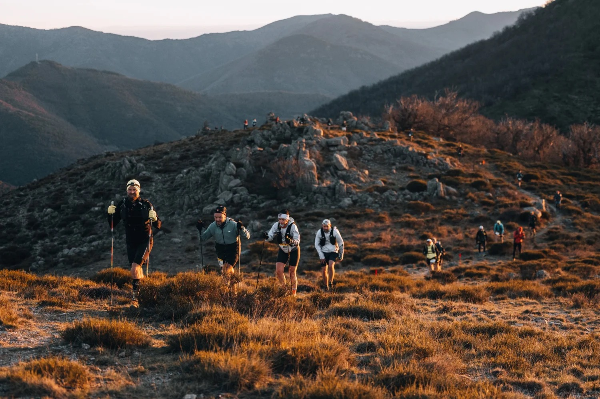

Samedi 6 mars 2027 · Le Vigan
Cinq courses de 12 à 101 km entre le Pays Viganais et le cirque de Navacelles. Une même journée, de la nuit à la nuit, et l'arrivée à la Halle aux Sports.
Distance en orange, dénivelé en gris : les barres sont à la même échelle, de quoi choisir d'un coup d'œil. Ouvrez une course pour voir sa fiche, ses ravitaillements et ses barrières horaires.
Ravitaillements. Saint-André (km 14,5), Cap de Coste (km 25, liquide), Mandagout (km 31), Serres (km 44, liquide), Le Travers (km 49, eau), Arrigas (km 55), Le Quintanel (km 62), Blandas (km 80), Bez (km 90), puis la soupe à l'oignon à l'arrivée.
Un sac est déposé au ravitaillement de mi-course. Itinéraire de délestage possible depuis Calo Rouge, environ 5 km plus court.
| L'Arboux | km 10,5 | 5 h 50 |
| Saint-André-de-Majencoules | km 14,5 | 7 h 00 |
| Mandagout | km 31 | 10 h 25 |
| Arrigas | km 55 | 15 h 00 |
| Rocher du Loup | km 71 | 18 h 15 |
| Relais du Cirque, Blandas | km 80 | 20 h 05 |
| Bez | km 90 | 22 h 00 |
Ravitaillements. Serres (km 6, liquide), Le Travers (km 12, eau), Arrigas (km 17), Le Quintanel (km 26,5), Blandas (km 44), Bez (km 54,5), puis l'arrivée.
| Arrigas | km 17 | 15 h 00 |
| Rocher du Loup | km 34 | 18 h 15 |
| Blandas | km 44 | 20 h 05 |
| Bez | km 54,5 | 22 h 00 |
Ravitaillements. Saint-André (km 16), Cap de Coste (km 25) et Mandagout (km 32), puis l'arrivée.
Créé en 2020.
| L'Arboux | km 10,5 | 12 h 00 |
| Saint-André-de-Majencoules | km 16 | 13 h 15 |
| Mandagout | km 32 | 17 h 00 |
Ravitaillements. Mandagout (km 13,5), puis l'arrivée.
| Mandagout | km 13,5 | 16 h 45 |
Ravitaillements. Ravitaillement à l'arrivée uniquement.
Pas de barrière horaire.
Aucune barrière horaire.
Distances, dénivelés et horaires du roadbook 2027 ; places, tarifs et âges du règlement 2027. Statut des inscriptions relevé sur Njuko le 27 novembre 2026. Licence FFA ou PPS obligatoire, dossier complet au 20 février 2027.
Départ de l'ultra à 4 h 00, le jour se lève en course.
De l'ouverture de la Halle à 3 h du matin jusqu'aux derniers coureurs, peu avant minuit.
Halle aux Sports, accueil dès 17 h 30.
Retrait des dossards de 17 h 30 à 21 h 00.
Pasta party de 18 h 30 à 21 h 00, sur réservation (8 €).
Tout se passe autour de la Halle aux Sports Pierre Durand, au Vigan : retrait des dossards, salon, arrivées, douches et podiums.
Stationnement interdit aux abords de la Halle.
En bus : ligne liO 608 depuis Montpellier, ligne 140 depuis Nîmes.
Hébergements : sélection mise à jour sur la page Se loger.
Douches à la Halle aux Sports. Salon du Ceven'Trail le vendredi soir et le samedi.
Repas accompagnateur : 12 €. Pas de gobelet aux ravitaillements : écotasse.
Pas de remboursement, mais report ou échange possible jusqu'à 15 jours avant la course.
Gratuites, le samedi à partir de 11 h 15, aux abords de la Halle. Attestation de santé et autorisation parentale.
Classement en direct sur live.l-chrono.com, vidéo sur écran géant, sur le site et sur Facebook.

Plus de 150 bénévoles font le Ceven'Trail. L'association Pays Viganais Endurance Nature organise la course depuis 2004.
Les derniers rentrent peu avant minuit.
Les institutions et les entreprises qui soutiennent la course.
Démonstration EventLyx : réponses tirées des informations de cette page.